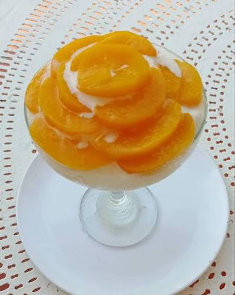

Copa de duraznos con crema chantilly

La copa de duraznos con crema es un postre tradicional que destaca por su sencillez y su increíble sabor. Es una preparación que nunca falla y que gusta a toda la familia. En esta receta, los duraznos en almíbar aportan jugosidad y dulzor, mientras que la crema chantilly firme le da cremosidad y estabilidad, permitiendo que la copa se mantenga perfecta por horas. Además, es un postre muy versátil que se puede preparar en vasos individuales, ideal para reuniones y celebraciones.